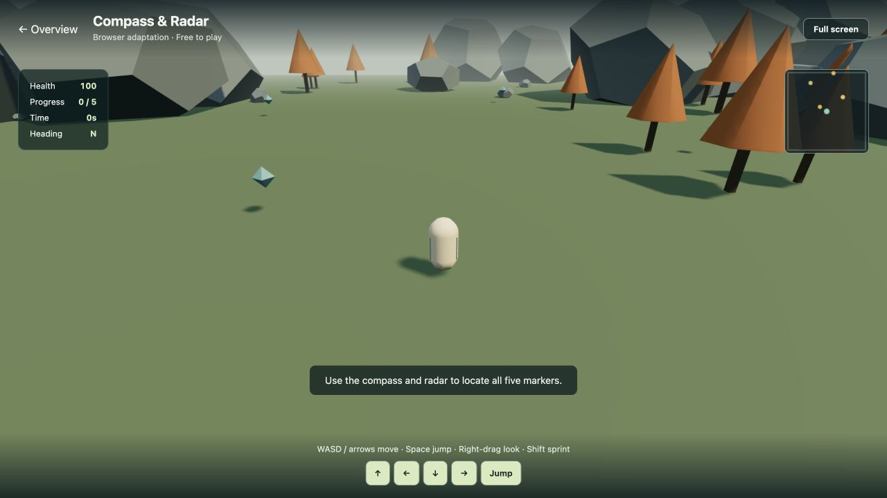

Directional compass
The compass communicates the direction the character is facing. A continuously updated heading helps the player orient themselves while moving through the scene.
Unreal Engine
A navigation interface that combines a directional compass with radar and points of interest. It helps communicate where the character is facing and how nearby locations relate to that direction.


The compass communicates the direction the character is facing. A continuously updated heading helps the player orient themselves while moving through the scene.
The radar translates locations in the surrounding world into a compact local display. It lets the player compare nearby objectives with their current position.
Recognizable destinations make a three-dimensional space easier to navigate. Their positions give exploration a purpose and help the player choose a route.
Use the compass and radar to locate all five markers. Independent browser adaptation of the project concept, built with JavaScript and WebGL. This is not a packaged Unreal Engine build.
WASD / arrows move · Space jump · Right-drag look · Shift sprint
Project reference preview; recovered build not verified.